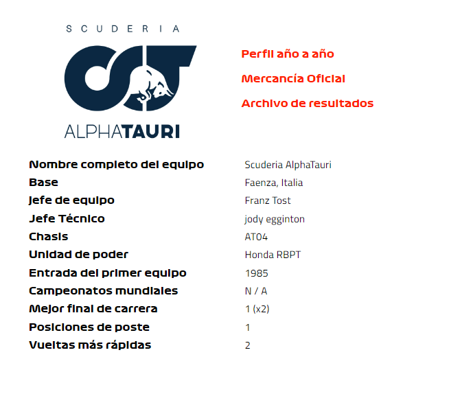
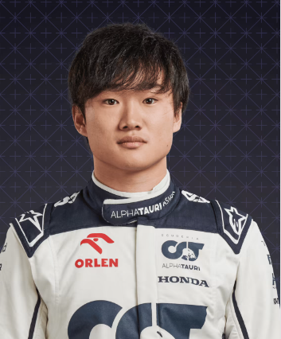
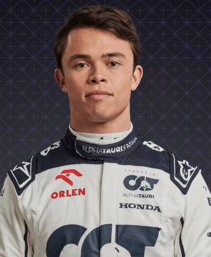

Alfatauri

En perfil
Establecido en 2006 como un escuadrón en el que los jóvenes pilotos del prodigioso grupo de talentos de Red Bull podían tener experiencia en la F1, AlphaTauri, originalmente llamado Toro Rosso, se formó a partir de las cenizas del valiente equipo Minardi. Sebastian Vettel dio validez al enfoque casi de inmediato, logrando una victoria de cuento de hadas en 2008, antes de disfrutar del éxito en el campeonato mundial con el equipo matriz Red Bull Racing. Hoy en día, el espíritu de fomentar el talento sigue siendo válido, aunque el equipo italiano ya no es simplemente un "equipo B", sino un constructor por derecho propio....
2022
El impulso se detiene y pierde terreno frente a Alfa Romeo y Haas, cayendo a P9 en la clasificación final, con solo 35 puntos frente a los 142 de 2021. Pierre Gasly obtiene el mejor resultado de la temporada con un quinto lugar en Bakú, pero deja el equipo en el final del año.
2021
Sube otro lugar al sexto en la clasificación, ya que el siempre mejorado Pierre Gasly logra un podio en Azerbaiyán y puntos en casi todas las carreras que termina. El compañero de equipo novato, Yuki Tsunoda, se toma su tiempo para recuperarse, pero asegura un excelente cuarto lugar en el final de la temporada.
2020
Un nuevo nombre trae un nuevo ímpetu y AlphaTauri emerge como una verdadera fuerza en el centro del campo, anotando más de un siglo de puntos, 27 de ellos en casa en Monza, donde Pierre Gasly asegura su primera victoria y la del equipo.
2019
En su última temporada bajo el nombre de Toro Rosso, disfruta de su campaña más exitosa hasta la fecha, anotando 85 puntos y asegurándose el sexto lugar en la clasificación. El intercambio de pilotos de mitad de temporada ve a Pierre Gasly regresar de Red Bull Racing, el francés responde a su 'degradación' con un espectacular podio inaugural en Brasil.
Pilotos

Yuki tsunoda

Nyck De Vries